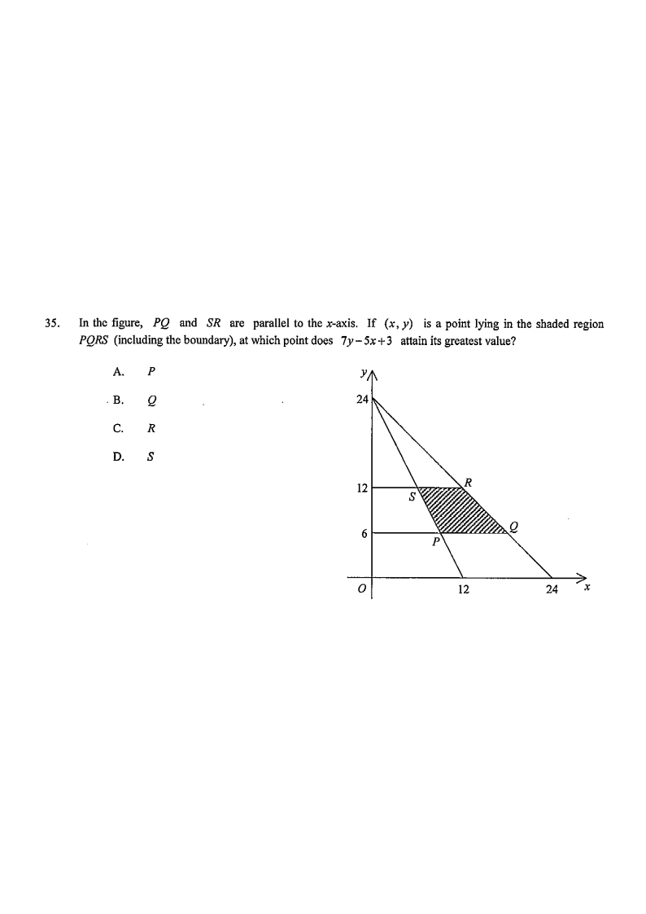

line SP: y=−2x+24line RQ: y=−x+24feasible region PQRS
HKDSE 2016 Paper 2 — Question 35
Topic 9 · Inequalities and Linear Programming
In the figure, $PQ$ and $SR$ are parallel to the $x$-axis. If $(x,y)$ is a point lying in the shaded region $PQRS$ (including the boundary), at which point does $7y-5x+3$ attain its greatest value?
A. $P$ B. $Q$ C. $R$ D. $S$

Figure (original exam diagram)
STEP 1
Read off what the figure gives us
$PQ$ and $SR$ are horizontal, so the shaded region is a trapezium (in fact a rectangle cut by two slant lines). From the graph:
$S$ and $R$ lie on the line $y=12$
$P$ and $Q$ lie on the line $y=6$
Both slant lines pass through the $y$-intercept $(0,24)$
One slant line hits the $x$-axis at $x=12$, the other at $x=24$
Hint: Horizontal edges ⇒ the four corner points have $y=12$ (top) and $y=6$ (bottom). We only need the 4 corner coordinates.
STEP 2
Equation of the steeper line $SP$
Equation of a Straight Line from Two Points\(\dfrac{y-y_{1}}{x-x_{1}}=\dfrac{y_{2}-y_{1}}{x_{2}-x_{1}}\)Using \((0,24)\) and \((12,0)\) gives \(y-24=-2x\), i.e. \(y=-2x+24\) for the steeper edge \(SP\).
At $y=6$: $\;6=-x+24 \Rightarrow x=18$, so $Q=(18,6)$.
At $y=12$: $\;12=-x+24 \Rightarrow x=12$, so $R=(12,12)$.
Hint: Slope $=-1$ since the line cuts both axes at $24$. Same substitution trick applies.
STEP 4
Key theorem: optimum occurs at a corner
Vertex Theorem of Linear Programming\(f(x,y)=ax+by\ \text{attains its extreme values at a vertex}\)\(f=7y-5x+3\) is linear on the bounded region \(PQRS\), so only the four corners need testing.
For a linear function $f(x,y)=7y-5x+3$ on a bounded polygonal region, the greatest (and least) value is always attained at a vertex of the region.
So we only need to evaluate $f$ at the four corners $P$, $Q$, $R$, $S$ — no need to check interior points.
Hint: This is the “Fundamental Theorem of Linear Programming”. Saves you from testing infinitely many points.
STEP 5
Evaluate $7y-5x+3$ at each corner
Point
$(x,y)$
$7y-5x+3$
$P$
$(9,6)$
$7(6)-5(9)+3=0$
$Q$
$(18,6)$
$7(6)-5(18)+3=-45$
$R$
$(12,12)$
$7(12)-5(12)+3=27$
$S$
$(6,12)$
$7(12)-5(6)+3=57$
Hint: Just four arithmetic substitutions — compare the four numbers $0,\,-45,\,27,\,57$.
STEP 6
Conclusion
Among $0,\,-45,\,27,\,57$, the greatest is $57$, attained at $S(6,12)$.
Equivalently, the objective $7y-5x+3=k$ is a family of parallel lines of slope $\tfrac57>0$; pushing the line as far up-left as possible, the last contact with the region is the vertex $S$.
Answer: D ($S$) — the greatest value of $7y-5x+3$ is $57$ at $S(6,12)$.
PRACTICESimilar question — try it yourself
Question. In the figure, \(PQ\) and \(SR\) are parallel to the \(x\)-axis. The slant edges \(SP\) and \(RQ\) both pass through \((0,28)\), meeting the \(x\)-axis at \(x=14\) and \(x=28\) respectively; \(SR\) lies on \(y=16\) and \(PQ\) on \(y=8\). If \((x,y)\) is a point in the shaded region \(PQRS\) (including the boundary), at which point does \(5y-4x+1\) attain its greatest value? A. \(P\) B. \(Q\) C. \(R\) D. \(S\) (1 mark)
Show the worked solution
Step 1. The steeper edge through \((0,28)\) and \((14,0)\) is \(y=-2x+28\); the shallower edge through \((0,28)\) and \((28,0)\) is \(y=-x+28\).
Step 2. On \(y=8\): \(x=10\) gives \(P(10,8)\) and \(x=20\) gives \(Q(20,8)\). On \(y=16\): \(x=6\) gives \(S(6,16)\) and \(x=12\) gives \(R(12,16)\).
Step 3. Evaluate \(5y-4x+1\): at \(P\), \(40-40+1=1\); at \(Q\), \(40-80+1=-39\); at \(R\), \(80-48+1=33\); at \(S\), \(80-24+1=57\).
Step 4. The greatest value is \(57\), attained at \(S(6,16)\), so the answer is option D.